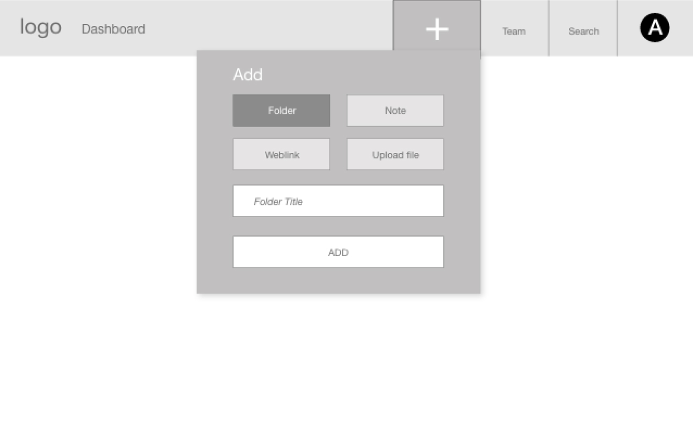

Filewell
Many of us keep too many browser tabs open and stash files and bookmarks across folders and services—which can add up to cluttered mental space, wasted time and lost resources.
FileWell—an online storage site—was a conceptual project aimed at solving this problem by bringing order to digital file storage.
After all, it’s only called hoarding if you don’t have enough space and organization for your stuff.

In questioning people about their storage habits, I found that they were using up to 8 different tools or services to preserve files, and they were frustrated by the ensuing lost time and resources.
FileWell, a cloud storage solution, was created to help people organize and curate collections of files in one location for easy retrieval and collaboration. And since good organization depends on user practices, the product was built with both an immediate and long-range aim of encouraging and teaching users file management best practices.
FileWell was a conceptual project with mentor oversight that allowed me to gain agility with new tools while also refining my established design process to tackle the extra dimensions of human interaction with a web and mobile product.
The aim of this educational project was to learn by doing. My work began with a broad directive: a fictional client wanting to enter the cloud storage and organizational market and setting few constriants.
I began by researching cloud storage trends and existing products (Google Drive, Dropbox, Evernote, and Dropmark). SWOT analysis and mapping user flows for existing products allowed me to understand existing products and the tools that users might currently use.
Next up, I asked questions of potential users. For this project, the questions would be asked in the form of an online survey. Recognizing that surveys are not always the best way to collect reliable information, taking the time to write good questions that will unearth themes or user motivations is foundational to user research.
The initial survey results, combined with follow-up discussions with respondents who provided email addresses, allowed me to create two user personas to remember the frustrations and goals of potential users.
I wrote user stories to define the scope of the MVP and drafted user flows to map out process and determine product architechture.
Survey findings were translated into two user personas that captured the main categories of users: creators and curators. These personas helped to guide the user stories that defined the MVP.
I have too much to do to spend 20 minutes trying to find a photo I took last season to showcase my abilities to potential client.
Initial sketches quickly converted into a low-fidelity wireframe prototype to conduct in-person usability tests.
Usability testing: Using a script I wrote, I asked people to sign up for an account, add a file to the dashboard, and organize an item from a populated dashboard.
1
Original design
After: Add pane moved to be a drop down menu from tool bar better connected the process especially with popluated dashboard.
2
Original design: populated dashboard
After testing: added ability for user to change dashboard view from thumbnail to list view.
3
Next up: name the product and make branding decisions. Using user-expressed needs collected during research to make a mind map, I found my way to the product name FileWell—which captures both the product's core idea of a healthy file storage system and its result, a deep reservoir of digital files for future inspiration and work.
Wanting the text and imagery to align with the product’s ease of use, I tailored the voice and messaging to be to the point and helpful—with occasional playful nods toward the deep waters of a well. And I selected photographs and colors to communicate calm and peacefulness.
Having the feel, voice and tone decided, I created branding guideline documentation. And I took the wireframes from low- to high-fidelity.
 View Style Guide
View Style Guide
Branding decisions made, I created a high-fidelity prototype, using preference tests to determine the most recognizable mark to identify file types on the dashboard.
In another round of usability testing, I asked participants to complete four tasks, recording the in-person and remote sessions. I made changes to the high-fidelity prototype based on the user reactions and feedback during testing sessions.
1 I sought feedback by way of preference testing to uncover the best solution for users to easily recognize file type icons and buttons.
2 During usability testing, I quickly discovered that the icons allowing users to switch between thumbnail and list view were too small. I increased size before more testing.

3 As I’ve learned from initial research and personal experience, learning and employing file management best practices is key for any user to find ‘digital serenity.” A key distinctive for this product would be a library and tips to educate and encourge users to use best practices. This library, along with tips baked into the workflow, would grow with the product. And more functionality could be unlocked as a user upgrades her plan.

To conclude work on this project, I packaged up deliverables with the understanding that this would be just the first cycle if this were a product moving to development of the MVP.
Having worked as a visual designer for 20+ years, I have a solid design process that guides my work from idea to completion—on time and on budget. The aim of this project was to gain agility with new tools and expand my process for the extra dimensions of human interaction involved in web and mobile products.
The usability testing sessions taught me the importance of allowing users the time and space to struggle in order to appreciate the roadblocks or flaws that need to be addressed in product design.
Working frequently as a freelance designer, I often detect and alert clients to confusing text or processes. But, on this project I was confronted with the reality that this ability does not directly translate into knowing what will be intuitive to a user inside all the moving parts of a website or mobile app. Intutitive can be a moving target.